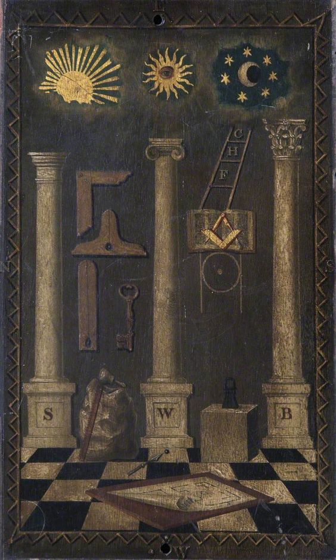
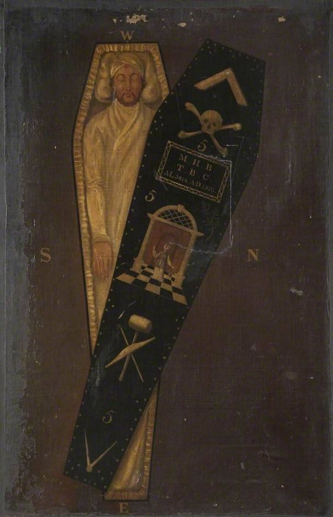
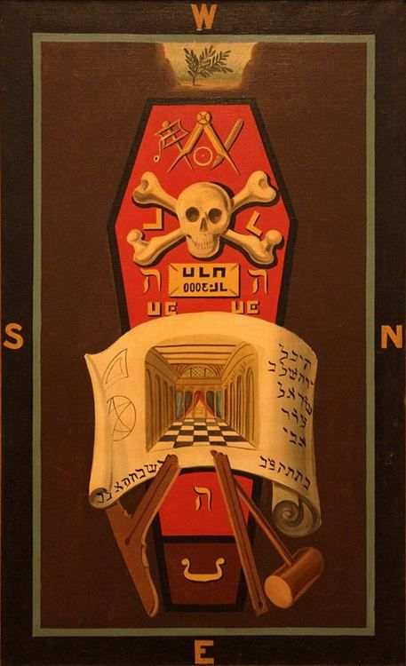
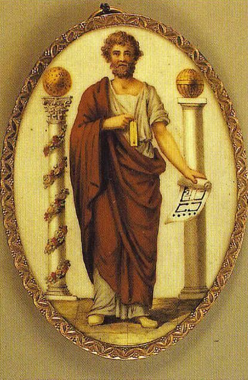
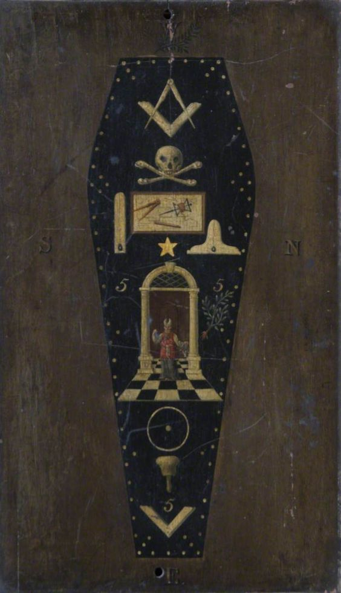

A Lenda de Hiram Abiff
Prefácio
A lenda de Hiram Abiff é uma alegoria central na Maçonaria, especialmente no rito de passagem do Terceiro Grau, conhecido como Mestre Maçom. Esta lenda é cheia de simbolismo e tem sido interpretada de várias maneiras ao longo dos anos.
Contexto Histórico e Mítico
Hiram Abiff, também chamado de "Hiram, o Arquiteto" ou "Hiram, o Construtor", é descrito como um mestre artesão enviado pelo rei de Tiro, também Hiram, para ajudar o rei Salomão na construção do Templo de Jerusalém. Este templo, conhecido como o Primeiro Templo, era destinado a ser a morada de Deus e um lugar de adoração para o povo de Israel.
A Lenda
O Chamado
Segundo a lenda, Hiram Abiff era um homem de grande habilidade e sabedoria, um mestre arquiteto cujo talento era inigualável. Ele era o principal responsável pelas obras do Templo de Salomão, detendo os segredos da maestria e as palavras de passe que identificavam os mestres maçons.
A Conspiração
A lenda toma um rumo trágico quando três Companheiros, que desejavam obter os segredos do Mestre Maçom sem passar pelos devidos ritos de ascensão e aprendizado, conspiraram para arrancar esses segredos de Hiram Abiff. Os conspiradores eram conhecidos como Jubela, Jubelo e Jubelum, também referidos como os "três rufiões".
O Ataque
Num dia fatídico, os três rufiões emboscaram Hiram Abiff quando ele estava prestes a sair do Templo, após suas orações do meio-dia. Eles se posicionaram em três portas diferentes do templo. Quando Hiram tentou sair pela primeira porta, Jubela o confrontou e exigiu os segredos do Mestre Maçom. Hiram se recusou e foi golpeado com um esquadro na garganta. Ele então tentou sair pela segunda porta, onde foi abordado por Jubelo, que, após a recusa de Hiram, o atingiu no peito com um nível. Na terceira porta, Jubelum, o mais impiedoso dos três, esperava. Após Hiram recusar novamente revelar os segredos, Jubelum o atacou com um malho na cabeça, causando sua morte.
O Sepultamento e a Descoberta
Os três rufiões, ao perceberem a gravidade de seu ato, decidiram enterrar o corpo de Hiram em uma cova rasa, marcando o local com um ramo de acácia. Eles então fugiram, esperando escapar da justiça. No entanto, Hiram foi dado como desaparecido, e o rei Salomão ordenou uma busca. Após vários dias, os soldados de Salomão encontraram o túmulo improvisado de Hiram Abiff.
A Ressurreição Simbólica
O corpo de Hiram foi exumado e levado de volta ao Templo. O rei Salomão, ao saber do assassinato e das circunstâncias, condenou os rufiões, que foram eventualmente capturados e punidos. Em uma cerimônia simbólica, Hiram Abiff foi ressuscitado pelos mestres maçons com o aperto de mão secreto do Mestre Maçom, simbolizando a imortalidade da alma e a continuidade do conhecimento.
Simbolismo e Significado
A lenda de Hiram Abiff é rica em simbolismo e interpretações:
• Hiram Abiff: Representa a virtude, a habilidade e a integridade, sendo um modelo para os maçons.
• Os Três Rufiões: Simbolizam as paixões humanas e as tentações que devem ser superadas.
• O Templo de Salomão: Representa o templo interior que cada maçom deve construir em si mesmo, um símbolo de perfeição espiritual.
• A Acácia: Simboliza a imortalidade e pureza da alma.
• A Ressurreição: Representa a crença na vida após a morte e a continuidade da alma.